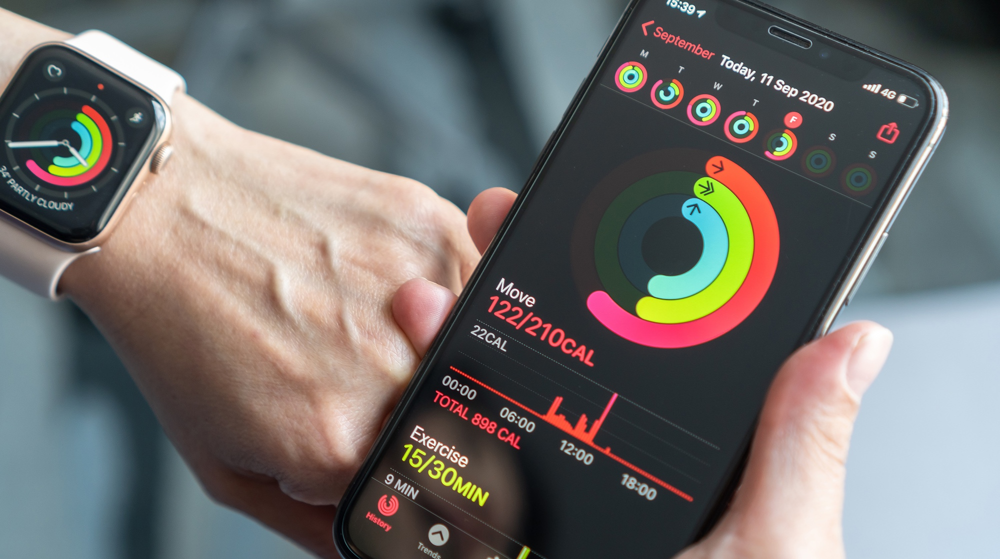

In the age of the digital revolution, data has become our constant companion, shaping our daily lives in ways we may not fully grasp.
It's not just a realm reserved for data scientists
and analysts; it's the unsung hero working silently in the background, influencing our decisions and improving our lives.
In this article, we embark on a journey to unravel the profound impact of data analysis on our everyday existence,
from the moment we rise to greet the day until we lay our heads to rest.


As the first rays of sunlight grace your morning, you reach for your fitness tracker or smartphone to begin the day's journey.
These devices, armed with sensors, quietly collect a treasure trove of data—your steps, heart rate, and sleep patterns—all in the quest to unlock the secrets of your well-being. Over time,these data-driven companions become your virtual fitness mentors.
They don't just count steps; they set goals, track progress, and offer insights into your health.
When you're lagging on steps or sleep, they nudge you in the right direction,
guiding you towards a healthier you.

As you engage with social media,algorithms tirelessly analyze your interactions, likes, and content preferences to curate a personalized feed that aligns
with your interests. Behind the scenes, data analysis ensures that your social media experience remains engaging and tailored to your tastes.
It's an intricate dance between data and your digital self.

Managing your finances is a breeze,thanks to financial tracking apps and platforms.They scrutinize your income, expenses, investments,
and savings, painting a comprehensive picture of your financial landscape.
These digital financial companions empower you to create budgets,track spending habits, and make informed financial decisions.
They also forecast your financial future, paving the way for goals like retirement savings or debt reduction.

When you indulge in online shopping, every click, view, and purchase generates a cascade of data.
E-commerce platforms harness this data to tailor your shopping experience, presenting product recommendations and optimizing pricing strategies.
Online retailers delve deep into consumer behavior to offer personalized suggestions and promotions.
It's not just about convenience; it's about enhancing your shopping journey while helping businesses thrive.